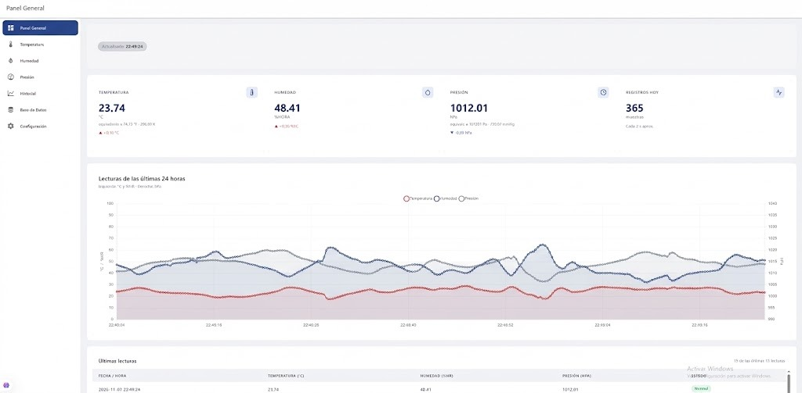
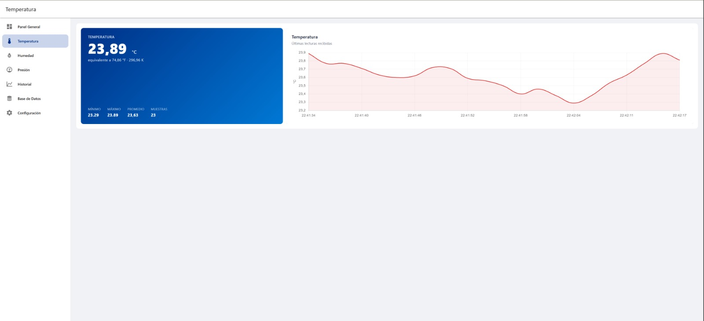
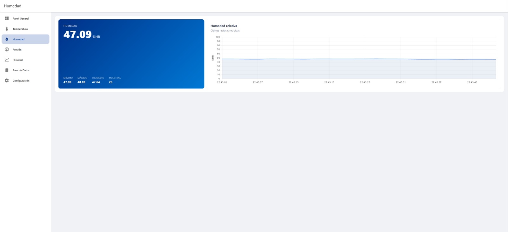
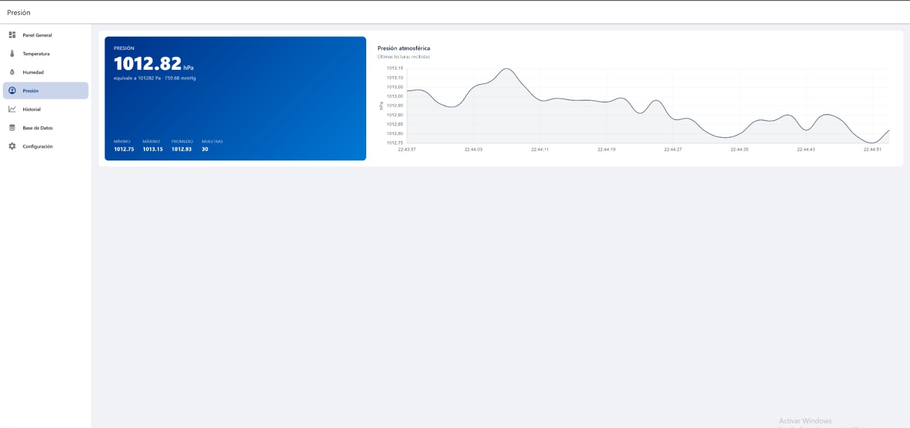
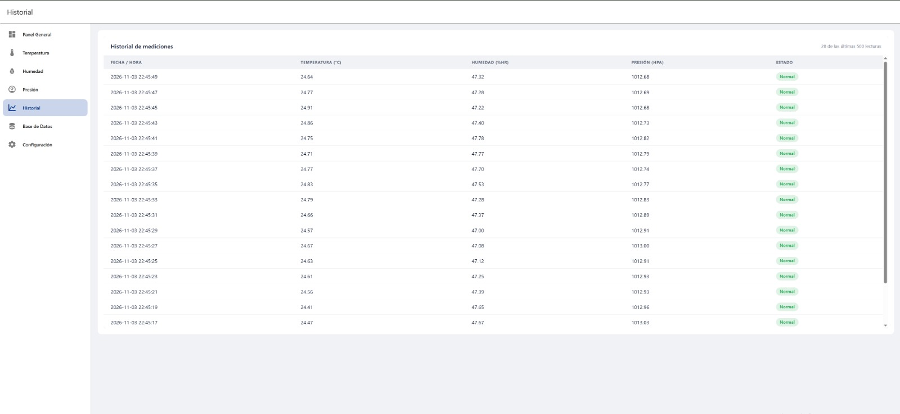

01 / PANEL PRINCIPAL
Todo tu ambiente, en una sola vista.
Consultá temperatura, humedad y presión juntas. Una vista general para entender qué está pasando sin recorrer distintas pantallas.
Tres variables. Un panorama completo.
02 / TEMPERATURA
Los cambios de temperatura, a la vista.
Revisá la lectura actual y su evolución. Los mínimos, máximos y promedios te ayudan a poner cada valor en contexto.
Más contexto para interpretar cada lectura.
03 / HUMEDAD
Conocé la humedad de tu entorno.
Seguí la humedad relativa a lo largo del tiempo y reconocé sus variaciones con un gráfico fácil de consultar.
Una forma simple de reconocer variaciones.
04 / PRESIÓN
Otra perspectiva de tu ambiente.
Observá la presión atmosférica y su evolución. Completá tu panorama ambiental con información presentada de forma clara.
Una mirada más completa del entorno.
05 / HISTORIAL
La información no termina en el momento.
Volvé sobre tus mediciones anteriores, identificá cuándo se registraron y seguí los cambios de tu ambiente a lo largo del tiempo.
Tus registros anteriores, disponibles para consultar.
Las imágenes muestran la interfaz del producto; no son mediciones en vivo.